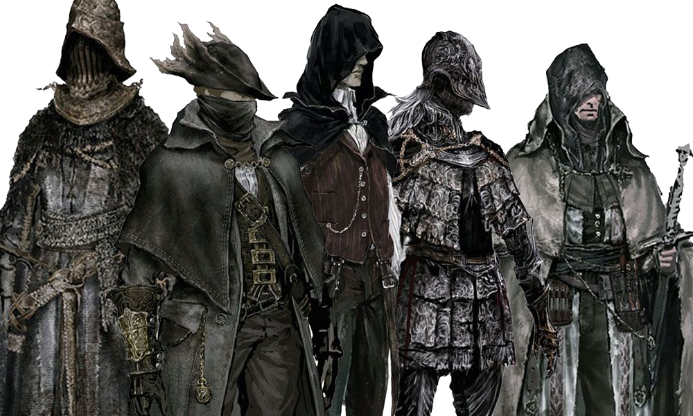
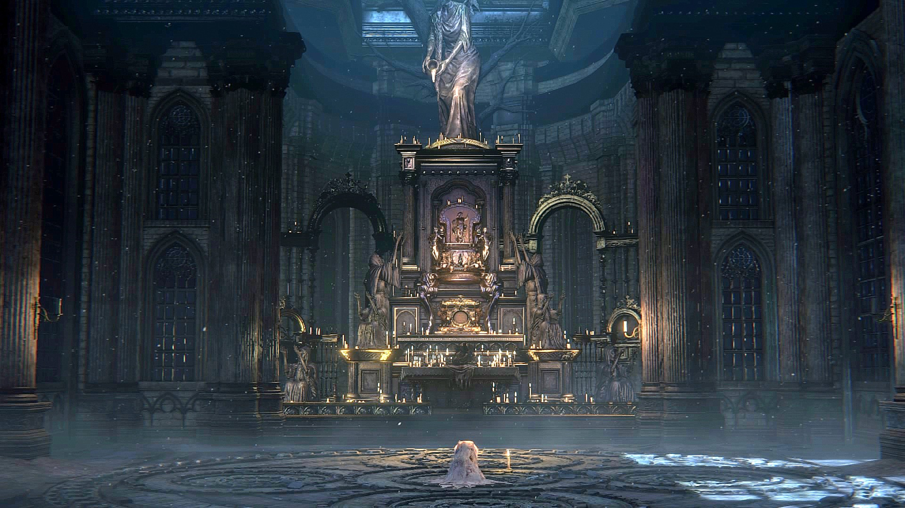
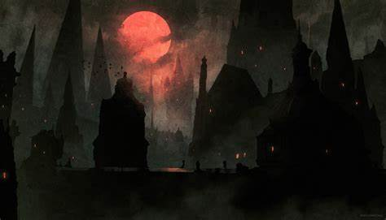
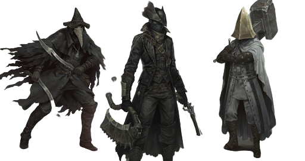
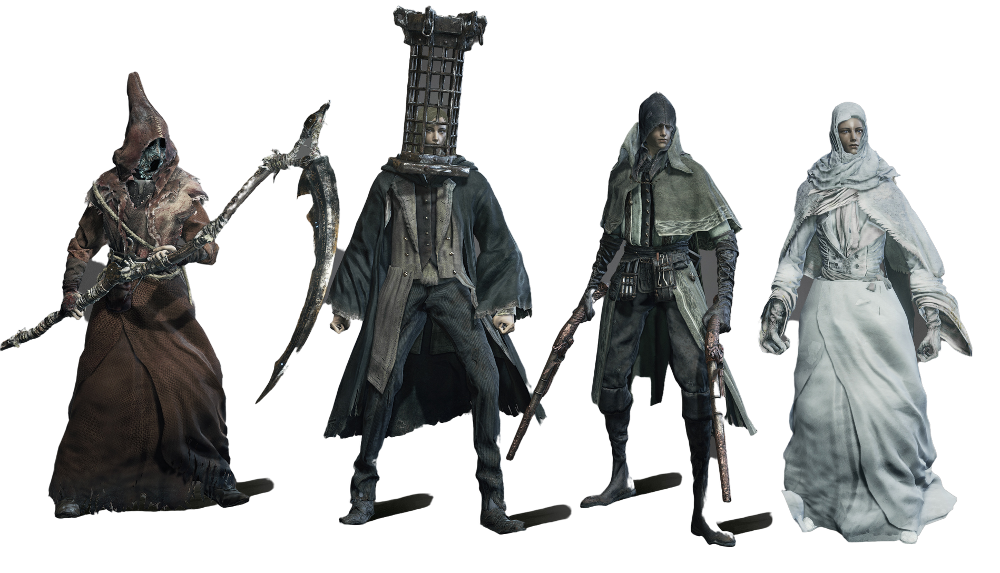
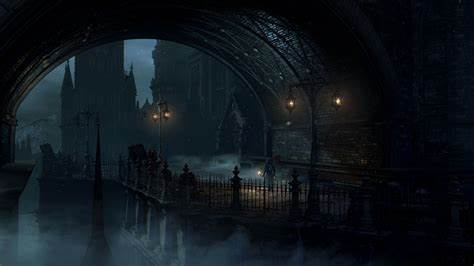
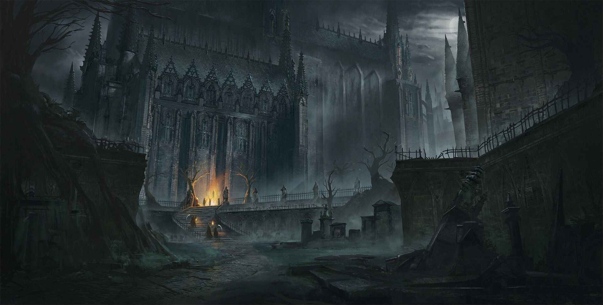

A História de Bloodborne
O início de tudo.
O enredo de Bloodborne abre muitas portas para interpretações próprias e teorias. Toda história contada aqui é meramente uma teoria e pode variar de acordo com a experiência do jogador.
No início do jogo, o protagonista viaja até Yharnam, lar de uma cura milagrosa. Ao chegar na cidade, somos recebidos por um senhor que nos faz uma transfusão de sangue, dizendo que tudo não passará apenas de um sonho ruim. Recebemos o sangue de Yharnam, que de acordo com os habitantes da cidade, poderia curar qualquer doença. Acordamos em plena noite de caçada, com um recado que diz “busque o Sangue Pálido para transcender a caçada”. Mas o que é a caçada? O que é este veículo milgroso que recebemos, e como o sangue pálido se difere dele?
Em algum momento, algo deu muito errado em Yharnam e suas imediações, muitas pessoas foram infectadas por uma doença transmitida pelo sangue e se tornaram feras semelhantes a lobos.
Pelo que se sabe, a Igreja da Cura fora o principal meio de transmissão deste sangue milagroso, porém, depois que a população passou a demonstrar uma alteração em seu comportamento e forma física, a Igreja da Cura criou dois grupos: Os curandeiros de branco e os de preto. O papel dos primeiros seria curar e ajudar as pessoas acometidas por doenças, seja ela a doença das feras ou não. Já o segundo grupo seria uma espécie de unidade de contenção às feras, pronta para caçar e destruir as bestas e ameaças que saíssem do controle. Os próprios habitantes da cidade organizam caçadas a esses monstros. O caos está instaurado.
 O protagonista se torna um caçador, e segue uma especialização ao longo de sua jornada. Seu principal objetivo é ajudar a cidade a conter as feras, e para isso, ele deve percorrer longos e perigosos caminhos em busca de respostas. Nessa jornada, diversas revelações sobre um poder superior testam as habilidades do protagonista, o fazendo pensar que realmente tudo é um sonho.
 
O fim de tudo
No desfecho de tudo, finalmente as feras são contidas, porém muitas interpretações indicam que tudo aquilo realmente era um sonho. Ainda não foram descobertas evidências o suficiente para comprovar esta teoria, porém muitas questões ainda se encontram sem respostas. Será que tudo não passou de um sonho, ou será que o sonho de alguma forma se tornou realidade? Essa é só uma das inúmeras interpretações sobre o desfecho do game.
 